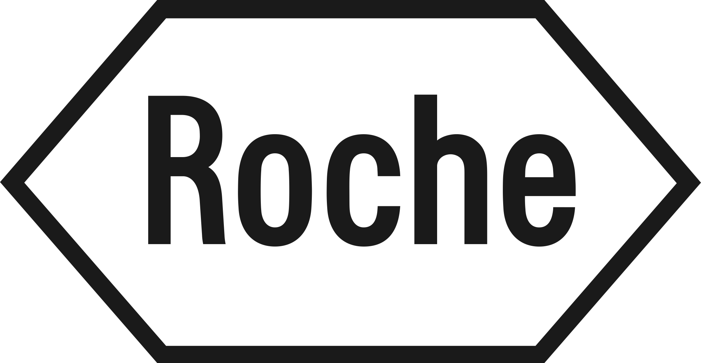
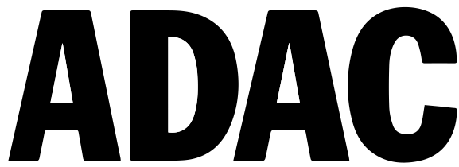

skills web development
-

-
-
-

project management & prototyping tools
-
-
-
-
-
-
-
-
-
-

-
-

projects
2017 - HEUTE
www.cancom.deDie Cancom SE mit Sitz in München ist ein deutsches Unternehmen
für IT-Dienstleistungen mit Fokussierung auf den Bereich Cloud Computing und zählt zu den drei größten
Systemhäusern in
Deutschland.
Heute ist die Firmengruppe unter anderem Partner von HewlettPackard, Microsoft, Cisco, IBM, SAP, Symantec,
Citrix, VMware, Apple
und Adobe in Deutschland.
Das IT-Lösungsangebot der CANCOM Gruppe enthält Beratung, Umsetzung, Services sowie den Betrieb von IT-Systemen.
Kunden profitieren dabei von der umfangreichen Expertise sowie einem ganzheitlichen und innovativen Portfolio,
das die für eine erfolgreiche digitale Transformation notwendigen Anforderungen an die IT von Unternehmen
abdeckt.
Meine Rollen:
-
Ausbildung zum Fachinformatiker für Systemintegration
- Netzwerktechnologie
- Hardware-Technologie
- Planung, Aufbau, Einrichtung & Pflege von IT-Systemen
- Eingesetzt bei projekten
-
-

-

2017 - 2019
www.02.deDie Telefónica Deutschland ist ein Telekommunikations unternehmenmit mit Sitz in München. Telefónica
Deutschland ist Teil von Telefónica Europe, einer Tochtergesellschaft von Telefónica. Über die Tochter
Telefónica Deutschland vertreibt das Unternehmen unter dem Namen O2 sowohl Mobilfunk- als auch
Festnetzanschlüsse und betreut ca. 53,1 Millionen Kunden.
Cancom SE würde von Telefónica beauftragt für die Betreuung der internen IT des Unternehmens in Deutschland.
Meine Rollen als teil des Desktop-Teams:
- Systembetreuung
- Problemerkennung und Lösung
- Einführung neuer Systeme
- Einführung neuer Hardware
- Testen neuer Hardware vor dem Rollout
- Netzwerke Patchen
2018 - 2019
www.roche.deDie F. Hoffmann-La Roche AG mit Hauptsitz in Basel ist eines der größten Pharmaunternehmen der Welt.
Roche beschäftigt weltweit über 94.000 Mitarbeiter. Der börsennotierte Konzern erwirtschaftete 2018 einen Umsatz
von 56,8 Mrd. Schweizer Franken. Das Unternehmen kam Anfang 2019 auf einen Börsenwert von ca. 209 Mrd. CHF
Cancom SE würde von Roche beauftragt für die Betreuung der internen IT des Unternehmens in Deutschland.
Meine Rollen als teil des Desktop-Teams:
- Systembetreuung
- Problemerkennung und Lösung
- Hardware Reparatur
- Einführung neuer Hardware
- Testen neuer Hardware vor dem Rollout
- Netzwerke Patchen
2019 - HEUTE
www.adac.deDer Allgemeine Deutsche Automobil-Club e. V., kurz ADAC, ist Europas größter Verkehrsclub, mit Sitz in München.
Zweck des ADAC ist „die Wahrnehmung und Förderung der Interessen des Kraftfahrwesens, des Motorsports
und des Tourismus“. Seine ursprüngliche und bekannteste Dienstleistung ist die Pannenhilfe. Daneben bietet der
Club direkt oder über Tochterunternehmen Dienstleistungen an, vertreibt Stadtpläne, Straßenkarten sowie
Autoatlanten und betreibt mehrere Fahrsicherheitszentren.
Cancom SE würde von ADAC beauftragt für die Betreuung der internen IT des Unternehmens in Deutschland.
Meine Rollen als teil des Desktop-Teams:
- Systembetreuung
- Problemerkennung und Lösung
- Hardware Reparatur
- Einführung neuer Hardware
- Testen neuer Hardware vor dem Rollout
- VPN Konfiguration
2014 - HEUTE
www.tralumaxpress.deTraluma UG ist ein in München ansässiges Softwareunternehmen, das sich auf den Transport und Logistikmarkt
spezialisiert hat und über fortschrittliche Funktionen und Kundenservice verfügt, mit denen Unternehmen ihre
Prozesse optimieren und effizienter arbeiten können.
Im Laufe der Jahre entwickelte das Unternehmen
zwei Systeme

Das tralumaxpress System ist ein skalierbares, ausfallsicheres
Dispositionsmanagement, das in der Angebotsverwaltung,
Verfügbarkeit, Auftragsvorbereitung, Auftragsverwaltung, Auslastung, Disposition und Abrechnung aller
Transportaufträge selbstständig agiert. Mit der Anbindung an das traluma portal hat das System direkten Zugriff
auf alle Kundendaten, die autonom ausgewählt und bearbeitet werden, bis das System in Sekundenschnelle eine
automatische Auftragsbestätigung und Disposition durchführt.
Meine Rolle in der ersten Phase:
Beratung & Erstellung von Spezifikationen, die für die externe Entwicklung des Systems.
- Erstellung einer funktionalen Road-Map
- UI/UX Design
-
Erstellung der Spezifikationen für:
- Objekt Datenbank
- Objekt Management (Kunde und Admin)
- Lokations Datenbank
- Lokations Management (Kunde und Admin)
- User Management (Provider)
- Kunden Management
- Auftrags Management im Backend
- Auftrags Management (Kunde und Provider)
- Bezahlprozess
- Disposition Planung / Plantafel
- Rollenverwaltung
- Registrierung (Kunde und Provider)
- Auftrags Erstellung sowie Prozess Ablauf (Transport, Umzug und Entsorgen)
- Ressourcen Management
- Mobile Applikation
Meine Rolle in der zweiten Phase:
Nach der Erstellung der Spezifikationen war meine nächste Aufgabe
die Unterstützung der Entwickler zu den Fragen bezüglich der
Spezifikationen und deren Realisierung sowie die Koordination
innerhalb der Testumgebung, nach Bereitstellung durch den
Entwicklungspartner mit Test Durchführung und Defectmanagement.
- Teilnahme an Entwicklungsmeetings
- Gemeinsames testen mit Entwicklungspartner in Indien
- Modultest
- Integrationstest
- Funktionstest
- UAT
- Test Erstellung
- Test Durchführung
- Defekt Erstellung
- Defekts Management
- Spezifikation Anpassung
Meine Rolle in der dritten Phase:
Nach der Auswertung des Usability-Tests wurden vor dem Go-Live mit
einem anderen Entwicklungsprozess weitere Systemoptimierungen am System vorgenommen.
2014 - HEUTE
in Kürze freigegebenDas Transport Portal dient der Auftrags Erstellung basierend auf dem Dispositionsmanagement und des Backends,
der es Privatkunden
ermöglicht, individuelle Transportaufträge für Kurier, Express- und Paketlieferungen („CEP“) innerhalb weniger
Sekunden zu beauftragen.
Meine Rolle in der ersten Phase:
Beratung & Erstellung von
Spezifikationen, die für die externe Entwicklung des Systems.
- Erstellung einer funktionalen Road-Map
- UI/UX Design
- Erstellung der Spezifikationen
Meine Rolle in der zweiten Phase:
Nach der Erstellung der Spezifikationen war meine nächste Aufgabe
die Unterstützung der Entwickler zu den Fragen bezüglich der
Spezifikationen und deren Realisierung sowie die Koordination
innerhalb der Testumgebung, nach Bereitstellung durch den
Entwicklungspartner mit Test Durchführung und Defectmanagement.
- Teilnahme an Entwicklungsmeetings
- Gemeinsames testen mit Entwicklungspartner in Indien
- Modultest
- Integrationstest
- Funktionstest
- UAT
- Test Erstellung
- Test Durchführung
- Defekt Erstellung
- Defekts Management
- Spezifikation Anpassung
Meine Rolle in der dritten Phase:
(Integration von tralumaxpress und dem traluma Portal)
Nach der Entwicklungsphase würden 10 Transportunternehmen sowie
20 Kunden aus München beauftragt die Funktionen des tralumaxpress Systems und Portals zu Testen.
Da das
System
auch ohne
das Portal genutzt werden kann und zwar als reines
Dispositionsmanagement Tool. Wurde die Angebotsverwaltung,
Verfügbarkeit, Auftragsvorbereitung, Auftragsverwaltung, Auslastung, Ressourcenmanagement und die Disposition
mit einem zweiten separatem Usability Test getestet.
-
Test Erstellung
Für die Test Durchführung der Hauptfunktionen durch den Kunden sowie der Transportunternehmen zur Einarbeitung in das System vor dem Explorativem testen. -
Test Vorbereitung
Erstellung der Systemdokumentation und des Testorakels sowie Schulung der Tester bezüglich des Systems. -
Test Betreuung
Als erster Kontakt zur den Testern (Kunden) für jeglicher Fragen sowie Probleme mit Betretung vor Ort bei dem Kunden. -
Test Auswertung
Die durch die Kunden ausgeführten Tests wurden Analysiert zur Ermittlung von Fehlerwirkungen sowie der Qualität des Systems. Womit auch Kundenvorschläge gesammelt wurden für die Systemoptimierung. -
Anpassung der Spezifikationen an die Ergebnisse der Test
Auswertung für Systemoptimierung
Hierfür wurden die Anmerkungen und Wünsche der Kunden Analysiert und Spezifiziert für eine Auswertung durch das Entwicklungteams und Traluma Management zur weiteren Implementierung der CRs basierend an ihrem Nutzen und Priorität.
Meine derzeitige Rolle:
(für tralumaxpress und traluma portal)
- Projektmanagement
- Kundenberatung hinsichtlich neuer Funktionen
- Erstellung von Spezifikationen für neue Funktionen
- UI/UX Design für neue Funktionen
- Kontinuierliche Systemverbesserungen
- Anfoderungsmanagement
2014 - 2017
www.tipico.deMiseco Sports LBS
Tipico ist ein international tätiger Anbieter von Sportwetten und Casinospielen mit Sitz im Portomaso
Business Tower im maltesischen San Ġiljan. Das Unternehmen hat zudem Niederlassungen in
Deutschland, Österreich, Gibraltar, Kroatien, Kolumbien und Malta. Insgesamt hat Tipico mehr als 6000
Mitarbeiter.
Meine Rolle:
Unter der Leitung von Miseco Sports gibt es 13 Betriebsstätten in München.
Meine Aufgaben bestanden in der Systemadministration
und Shop Management.
- Lokaler System Administrator für alle 13 Shops
- Problemerkennung und Lösung
- Geschäftsführung
- Schulung neuer Mitarbeiter